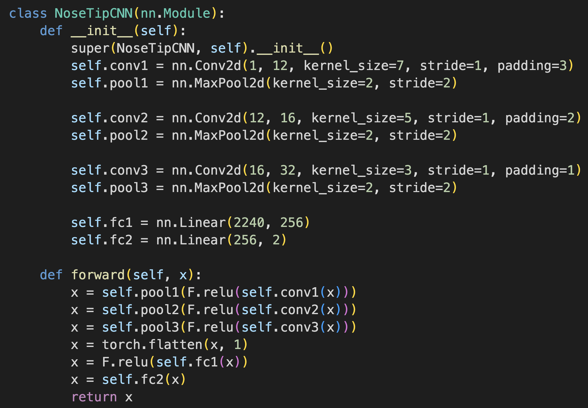
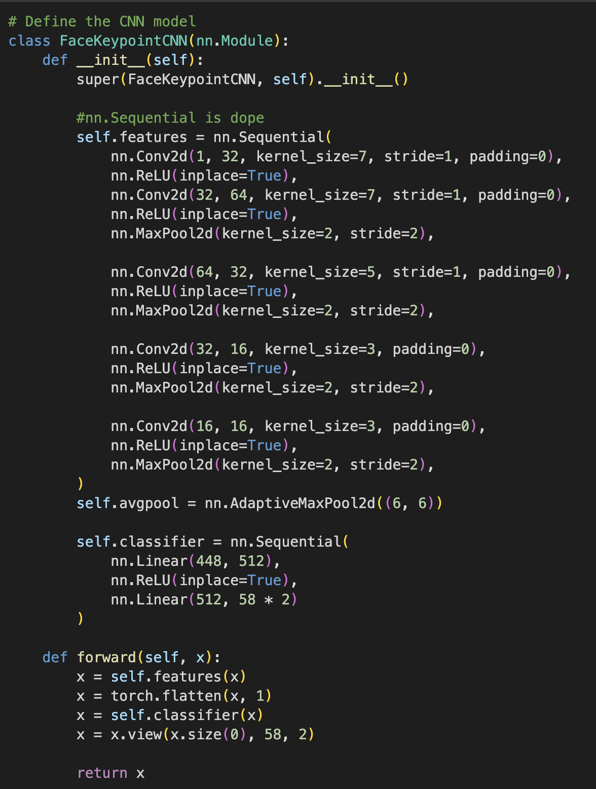
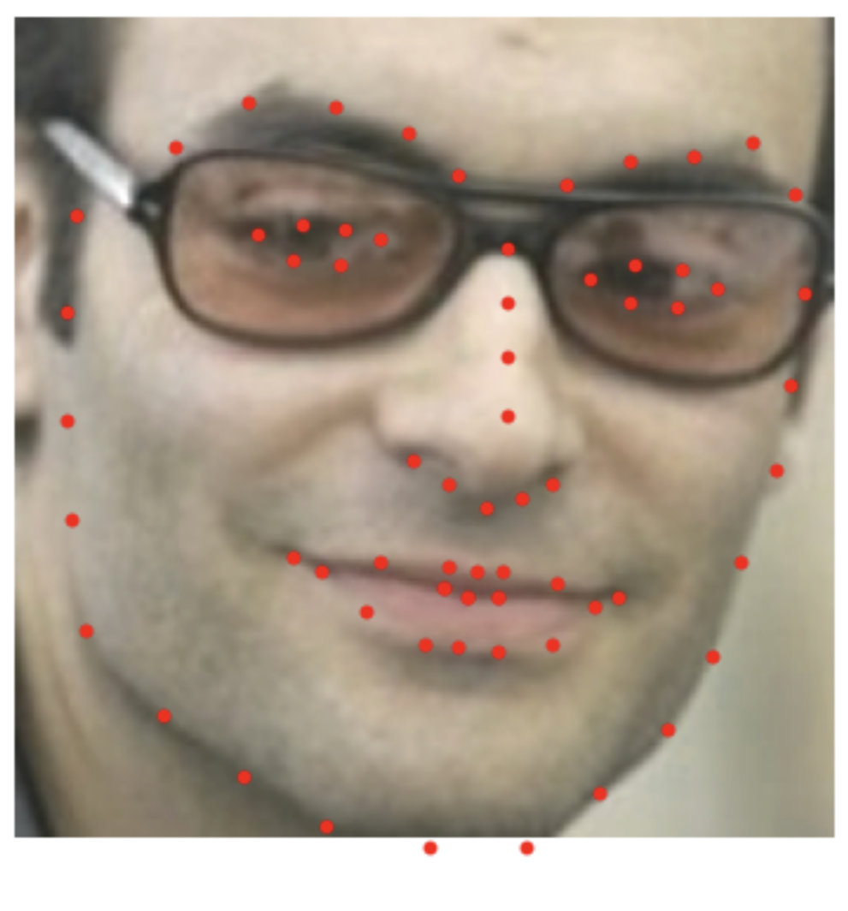
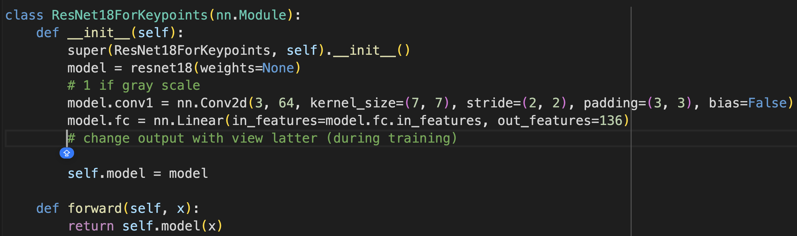
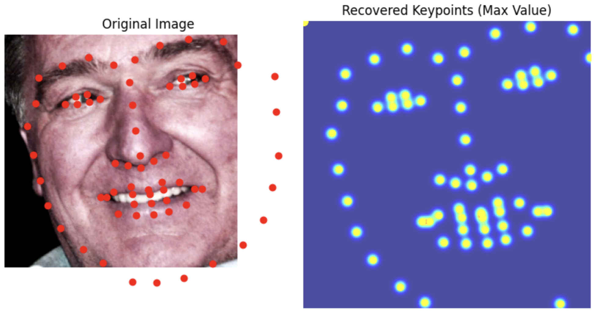
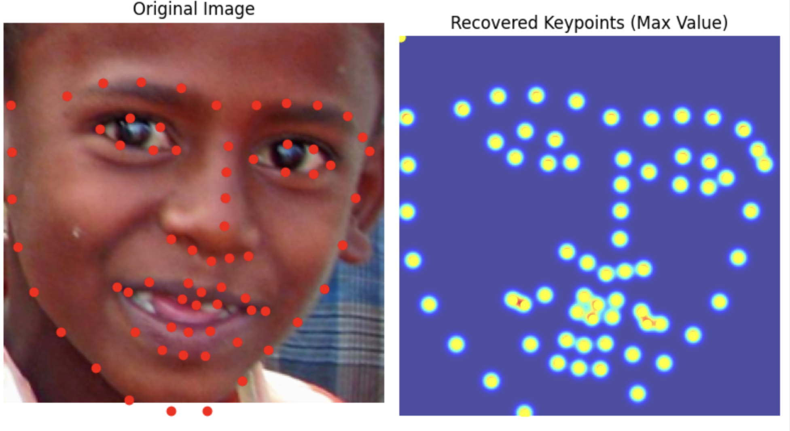
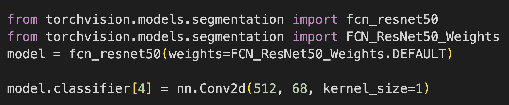

use neural networks to automatically detect facial keypoints.
Part 1: Nose Tip Detection
I started by training an initial toy model for detecting a single keypoint. The section is called nose tip detection but the instructions mentioned detecting pixels at index [-6] which is really more the bottom of the nose. The first step is parsing through the asf files of the IMM Face Database to get the images and their annotations:
Sampled image from dataloader
Our toy model is a 3 layer CNN that uses ReLU for non linearity and a MaxPool between each layer. The model ends in 2 fully connected layers and is trained.
MSE loss/model architecture
Hyperparameter values:

I used the Adam optimizer with learning rate 1e-3 for 20 epochs
Testing our model reveals that it tends to do a lot better when the face is closer to the average alignment. The model performs significantly better the more the subject is centered and facing forwards.
Success
Failure
Part 2: Full Facial Keypoints Detection
I begin this section by implementing a stronger CNN with two additional layers and more careful design/tuning of the hyperparameters (i.e. channels/stride/kernel width) in order to detect all 58 facial keypoints/landmarks. Same dataset as Part 1
Our data loader now has all these key points. We also apply some data augmentation to make our database “bigger”. We do this by applying small random translations,rotation, and color jitters to our data in order to create synthetic data. This process was a bit annoying using a torch because it was not trivial to apply the same transformation to our labels, I had to create a custom transformation class.
Data Loader/Augmentation
CNN architecture
The idea is that the CNN grows in channels while being reduced in size. I decided not to include a MaxPool layer after the first Convolutional layer because I didn't want to downsample that aggressively in the beginning. Other than that this is essentially the first model, just with more layers and more parameters per some layers.
Hyperparameter values:

I used the Adam optimizer with learning rate 1e-3 for 20 epochs
Results
The network performs fairly well, It still gets thrown off by being off center or having distinguishing features in terms of hair glasses etc.
Visualizing the Learned Filters
These learned filters don’t reveal as much about the image as I would like but they give us a snapshot of what the network “looks at”
Now I move onto the larger dataset: ibug face. This dataset has 6666 images of varying image sizes, and each image has 68 annotated facial keypoints. We use the annotations to crop out the face from each image.
Data Loader

CNN architecture
I used ResNet18 as suggested. I had to modify the first layer to only take one channel (grayscale), and I changed the output layer to be 136 (viewed as 68 * 2 array of coordinates).
Hypperparameter values:

I used the Adam optimizer with learning rate 1e-3 for 20 epochs
Results
I would say the results are quite good, not perfect but the structure seems really good and the points seem quite close.
Test Set
Without cropping the result is a bit worse
My images
I'm surprised it did so well with images it had never seen before, including animated characters. It did the worst with my face probably because the turn is too much.
Part 4: Pixelwise Classification
Now we're doing pixel wise classification. For each key point we make a 224 by 224 grid and center a gaussian on the location of the point with epsilon = 3. This is what our model is trying to predict/learn.
Data Loader


CNN architecture
I used ResNet50 as suggested. I again had to change the input output layers for the Model to be comatible.
Hypperparameter values:

I used the Adam optimizer with learning rate 1e-3 for 20 epochs, and epsilon = 3
Results
Even better results than before.
Test Set
My images
Unlike part 3, this one is actually able to annotate my face.
BW
Using 1 and 0 mask heatmaps for the landmarks instead of Gaussian.
I added a flag to my heat map generating function so that if sigma = 0 it applies a heat map
Data Loader for binary heatmaps
Coolest thing I learned
The different architectures I learned about were pretty cool, (Like Resnet). However Being able to do one of my least favorite parts of project 3 automatically beats everything.
Information
This website contains transitions not captured by the pdf, the title image changes into a high gamma verison and then into the black and white threshold filter version.